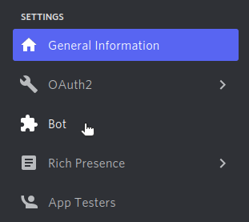
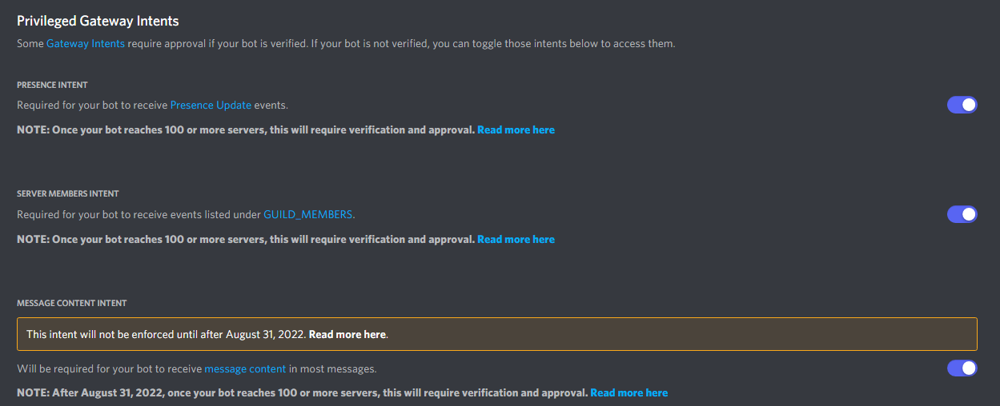

在 1.5 版本新加入.
A Primer to Gateway Intents¶
In version 1.5 comes the introduction of Intents. This is a radical change in how bots are written. An intent basically allows a bot to subscribe to specific buckets of events. The events that correspond to each intent is documented in the individual attribute of the Intents documentation.
These intents are passed to the constructor of Client or its subclasses (AutoShardedClient, AutoShardedBot, Bot) with the intents argument.
What intents are needed?¶
The intents that are necessary for your bot can only be dictated by yourself. Each attribute in the Intents class documents what events it corresponds to and what kind of cache it enables.
For example, if you want a bot that functions without spammy events like presences or typing then we could do the following:
import discord
intents = discord.Intents.default()
intents.typing = False
intents.presences = False
# Somewhere else:
# client = discord.Client(intents=intents)
# or
# from discord.ext import commands
# bot = commands.Bot(command_prefix='!', intents=intents)
Note that this doesn’t enable Intents.members since it’s a privileged intent.
Another example showing a bot that only deals with messages and guild information:
import discord
intents = discord.Intents(messages=True, guilds=True)
# If you also want reaction events enable the following:
# intents.reactions = True
# Somewhere else:
# client = discord.Client(intents=intents)
# or
# from discord.ext import commands
# bot = commands.Bot(command_prefix='!', intents=intents)
Privileged Intents¶
With the API change requiring bot authors to specify intents, some intents were restricted further and require more manual steps. These intents are called privileged intents.
A privileged intent is one that requires you to go to the developer portal and manually enable it. To enable privileged intents do the following:
請確保您已登入 Discord 網站。
Navigate to the application page.
Click on the bot you want to enable privileged intents for.
Navigate to the bot tab on the left side of the screen.

Scroll down to the 「Privileged Gateway Intents」 section and enable the ones you want.

警告
Enabling privileged intents when your bot is in over 100 guilds requires going through bot verification. If your bot is already verified and you would like to enable a privileged intent you must go through Discord support and talk to them about it.
備註
Even if you enable intents through the developer portal, you still have to enable the intents through code as well.
Do I need privileged intents?¶
This is a quick checklist to see if you need specific privileged intents.
Presence Intent¶
Whether you use
Member.statusat all to track member statuses.Whether you use
Member.activityorMember.activitiesto check member’s activities.
Member Intent¶
Whether you track member joins or member leaves, corresponds to
on_member_join()andon_member_remove()events.Whether you want to track member updates such as nickname or role changes.
Whether you want to track user updates such as usernames, avatars, discriminators, etc.
Whether you want to request the guild member list through
Guild.chunk()orGuild.fetch_members().Whether you want high accuracy member cache under
Guild.members.
Message Content¶
Whether you use
Message.contentto check message content.Whether you use
Message.attachmentsto check message attachments.Whether you use
Message.embedsto check message embeds.Whether you use
Message.componentsto check message components.Whether you use
Message.pollto check the message polls.Whether you use the commands extension with a non-mentioning prefix.
Member Cache¶
Along with intents, Discord now further restricts the ability to cache members and expects bot authors to cache as little as is necessary. However, to properly maintain a cache the Intents.members intent is required in order to track the members who left and properly evict them.
To aid with member cache where we don’t need members to be cached, the library now has a MemberCacheFlags flag to control the member cache. The documentation page for the class goes over the specific policies that are possible.
It should be noted that certain things do not need a member cache since Discord will provide full member information if possible. For example:
on_message()will haveMessage.authorbe a member even if cache is disabled.on_voice_state_update()will have thememberparameter be a member even if cache is disabled.on_reaction_add()will have theuserparameter be a member when in a guild even if cache is disabled.on_raw_reaction_add()will haveRawReactionActionEvent.memberbe a member when in a guild even if cache is disabled.The reaction add events do not contain additional information when in direct messages. This is a Discord limitation.
The reaction removal events do not have member information. This is a Discord limitation.
Other events that take a Member will require the use of the member cache. If absolute accuracy over the member cache is desirable, then it is advisable to have the Intents.members intent enabled.
Retrieving Members¶
If the cache is disabled or you disable chunking guilds at startup, we might still need a way to load members. The library offers a few ways to do this:
Guild.query_members()Used to query members by a prefix matching nickname or username.
This can also be used to query members by their user ID.
This uses the gateway and not the HTTP.
Guild.chunk()This can be used to fetch the entire member list through the gateway.
Guild.fetch_member()Used to fetch a member by ID through the HTTP API.
Guild.fetch_members()used to fetch a large number of members through the HTTP API.
It should be noted that the gateway has a strict rate limit of 120 requests per 60 seconds.
Troubleshooting¶
Some common issues relating to the mandatory intent change.
Where’d my members go?¶
Due to an API change Discord is now forcing developers who want member caching to explicitly opt-in to it. This is a Discord mandated change and there is no way to bypass it. In order to get members back you have to explicitly enable the members privileged intent and change the Intents.members attribute to true.
For example:
import discord
intents = discord.Intents.default()
intents.members = True
# Somewhere else:
# client = discord.Client(intents=intents)
# or
# from discord.ext import commands
# bot = commands.Bot(command_prefix='!', intents=intents)
Why does on_ready take so long to fire?¶
As part of the API change regarding intents, Discord also changed how members are loaded in the beginning. Originally the library could request 75 guilds at once and only request members from guilds that have the Guild.large attribute set to True. With the new intent changes, Discord mandates that we can only send 1 guild per request. This causes a 75x slowdown which is further compounded by the fact that all guilds, not just large guilds are being requested.
There are a few solutions to fix this.
The first solution is to request the privileged presences intent along with the privileged members intent and enable both of them. This allows the initial member list to contain online members just like the old gateway. Note that we’re still limited to 1 guild per request but the number of guilds we request is significantly reduced.
The second solution is to disable member chunking by setting chunk_guilds_at_startup to False when constructing a client. Then, when chunking for a guild is necessary you can use the various techniques to retrieve members.
To illustrate the slowdown caused by the API change, take a bot who is in 840 guilds and 95 of these guilds are 「large」 (over 250 members).
Under the original system this would result in 2 requests to fetch the member list (75 guilds, 20 guilds) roughly taking 60 seconds. With Intents.members but not Intents.presences this requires 840 requests, with a rate limit of 120 requests per 60 seconds means that due to waiting for the rate limit it totals to around 7 minutes of waiting for the rate limit to fetch all the members. With both Intents.members and Intents.presences we mostly get the old behaviour so we’re only required to request for the 95 guilds that are large, this is slightly less than our rate limit so it’s close to the original timing to fetch the member list.
Unfortunately due to this change being required from Discord there is nothing that the library can do to mitigate this.
If you truly dislike the direction Discord is going with their API, you can contact them via support.